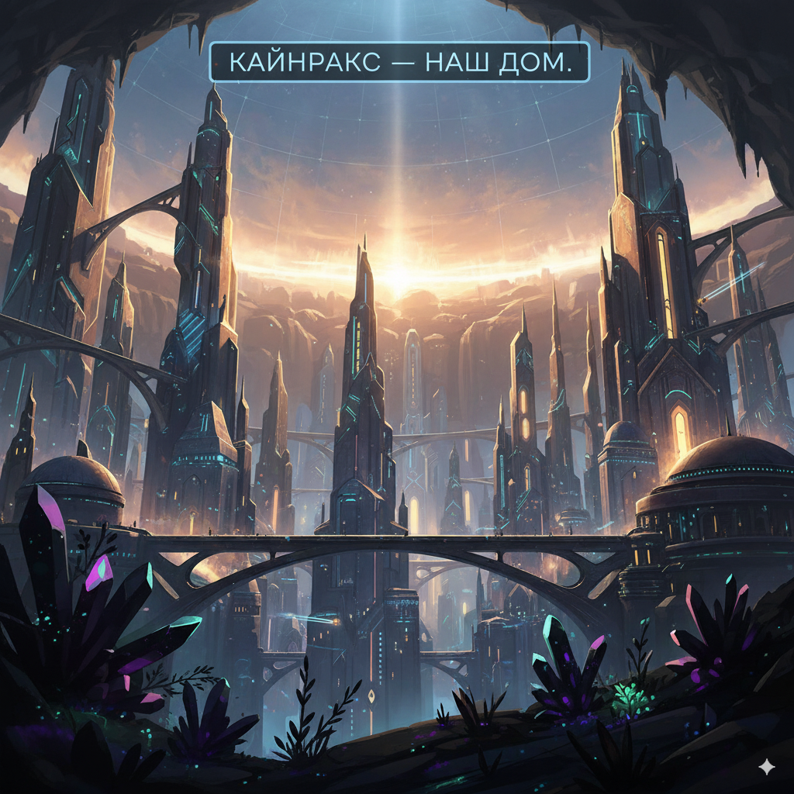

Перейти к содержанию
Кайнракс — наш дом
Открыть меню
Наш мир
Города
Твой путь
Основатели
Управление
Наш выбор
Хриш
Викторина

Энциклопедия юного гражданина
Кайнракс — наш дом
Мы живём глубоко под землёй, где наш разум и труд создали безопасный мир для людей.
Викторина юного гражданина
Проверка знаний
Викторина юного гражданина